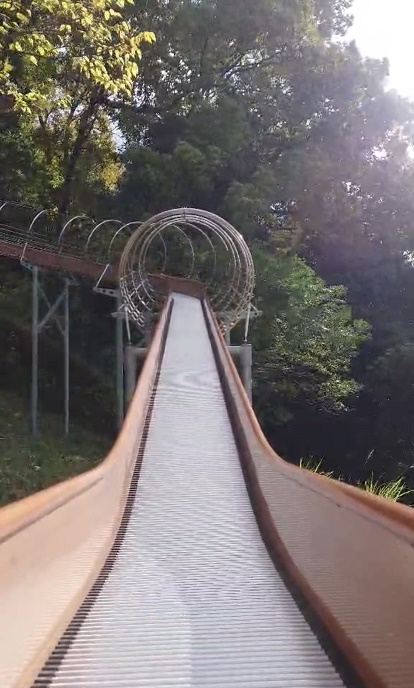

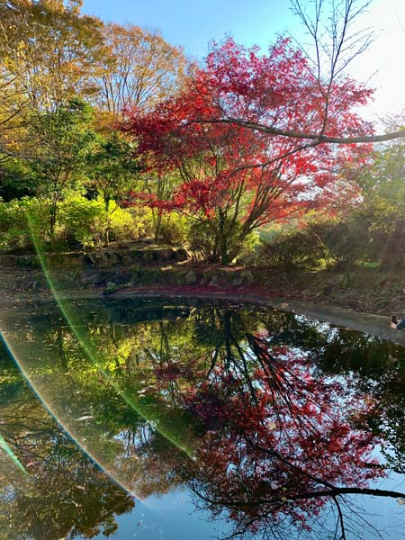

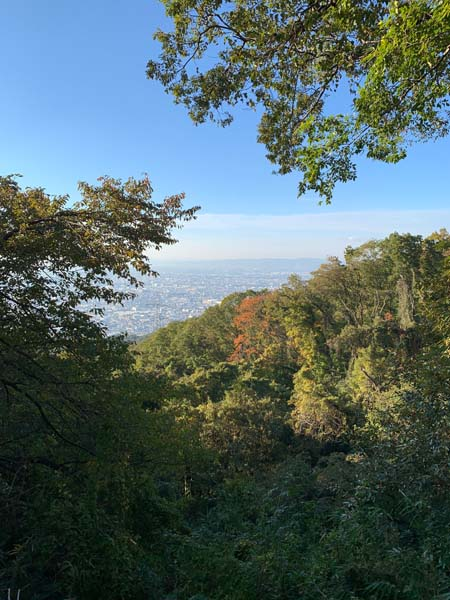

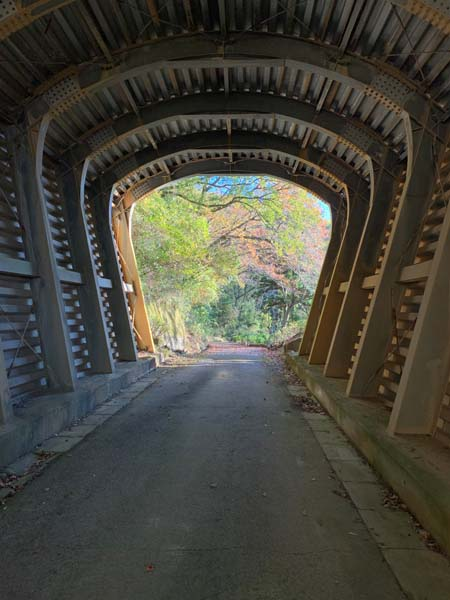

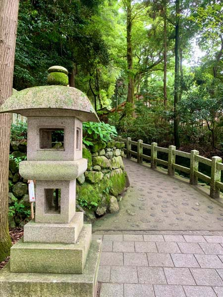

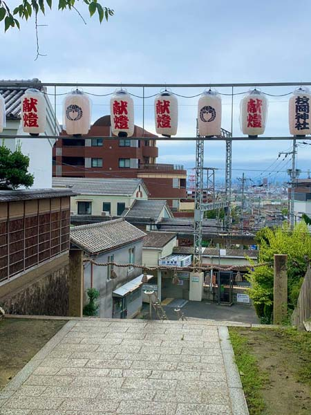

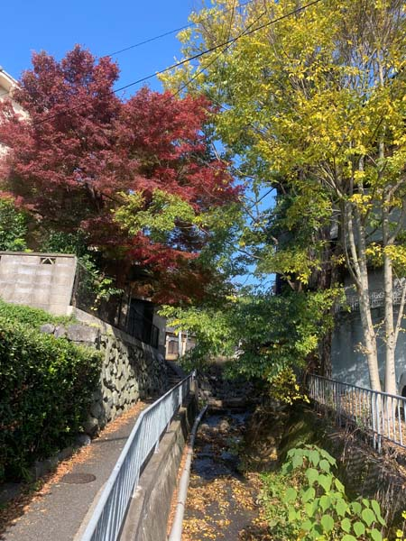

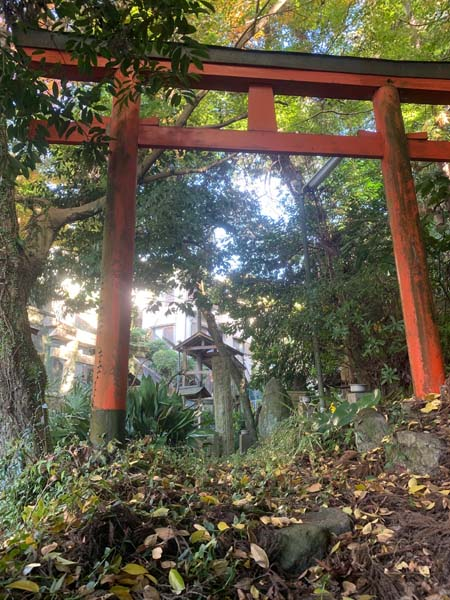

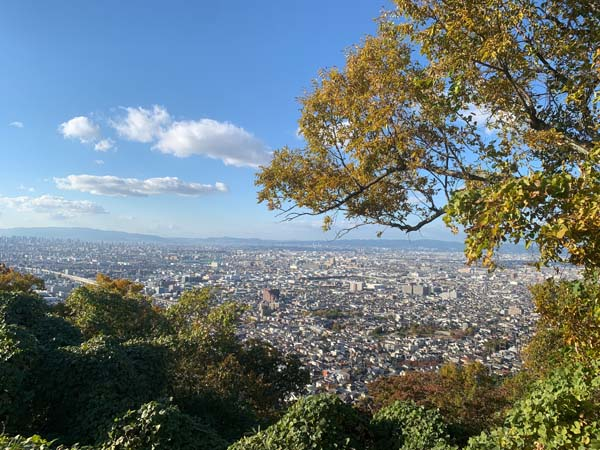

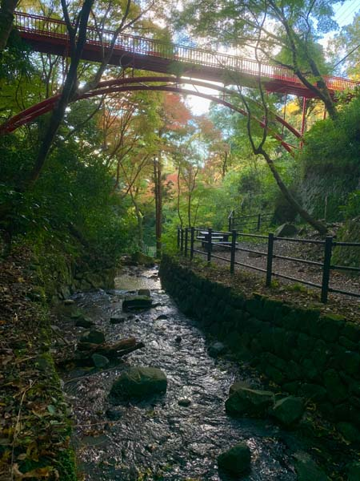

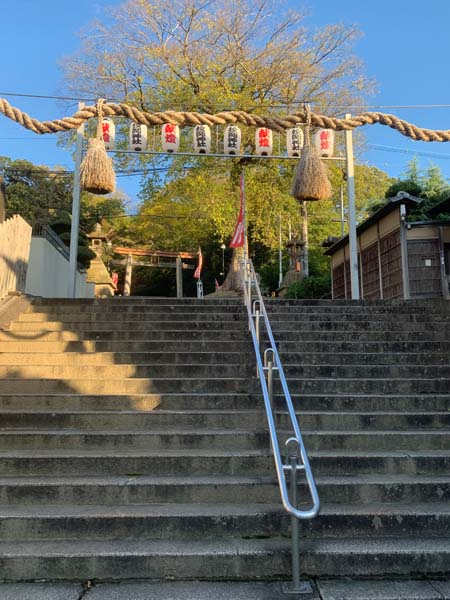
Mount Ikoma
Mount Ikoma appears at the very end of Book 4 of Divine Debris.
By this point in the story, the characters have been through quite a lot, and Ikoma makes a good place to rest for a moment. The mountain sits between Osaka and Nara, and from the trails on the Osaka side you can look back toward the city while being surrounded by forest.
That contrast is probably what made me choose it. Ikoma is close enough to Osaka to be an easy escape, but once you are on the mountain, it feels like you have gone much farther away.
It is also an excellent place for a hike. There are routes of different lengths and difficulty levels, and I like that you don't have to plan an expedition to enjoy it. You can go for a relatively short walk, or keep going for several hours if you want a proper mountain day. The views over Osaka are particularly good from the higher trails.
One of my favorite slightly absurd discoveries is 森のおもちゃ箱, the “Forest Toy Box” in Hiraoka Park. This is not the amusement park at the top of Mount Ikoma. It is a mountain playground, complete with long roller slides built into the slope.
You climb up.
You sit down.
And then you slide back down the mountain while looking out over Osaka.
There are not many hiking routes where this is a perfectly reasonable thing to do.
At the foot of the mountain is Hiraoka Jinja, one of the important old shrines of the Kawachi area. Its history is traditionally traced back more than two thousand years, and it is closely associated with the ancient Mononobe clan. The shrine is also connected with the religious history of Mount Ikoma and the surrounding area, so it makes a natural starting point for exploring the mountain.
If you are prepared for a longer hike, there is another reason to continue deeper into the mountain: the azaleas.
The Tsutsuji Garden in Narukawa Park covers the slopes with blooming azaleas in spring, usually around April to May. It takes considerably more effort to reach than the easier viewpoints near Hiraoka Park, but on a good day the flowers covering the mountainside are spectacular.
And Ikoma changes considerably with the seasons. The fresh green of spring and summer, the azaleas, autumn foliage and winter views all make it worth coming back at different times of the year.
That is probably what I like most about the place. Mount Ikoma isn't a single attraction that you visit, photograph and leave. It is a whole stretch of mountain with shrines, hiking trails, viewpoints, flowers, forests and the occasional completely unexpected playground.
From up there, Osaka is laid out below you, while on the other side of the mountain is Nara. It is a very physical reminder that these places, which can feel like separate worlds when you are walking around their streets, are actually sitting right next to each other.
Which seems like an appropriate place for Divine Debris to leave its characters at the end of Book 4.